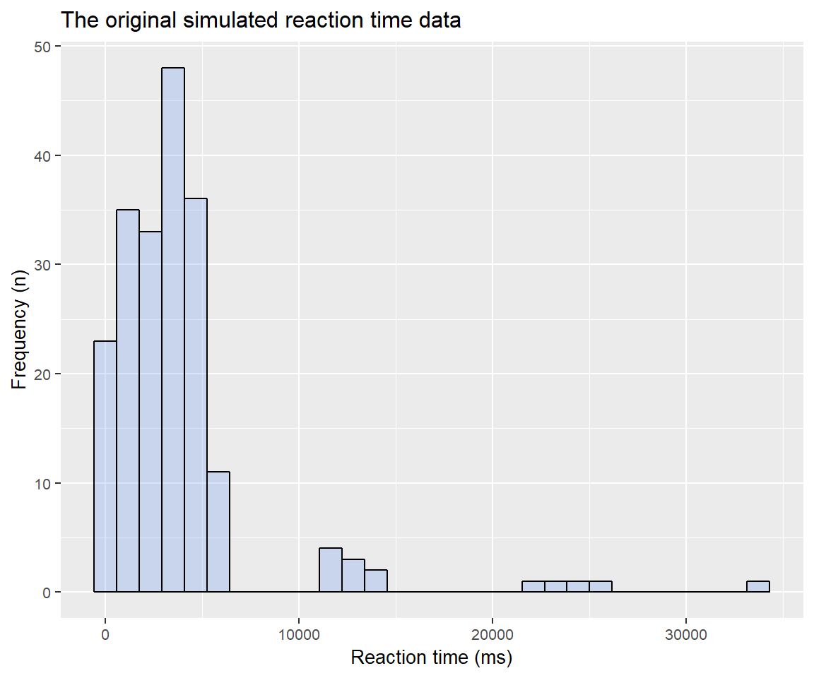
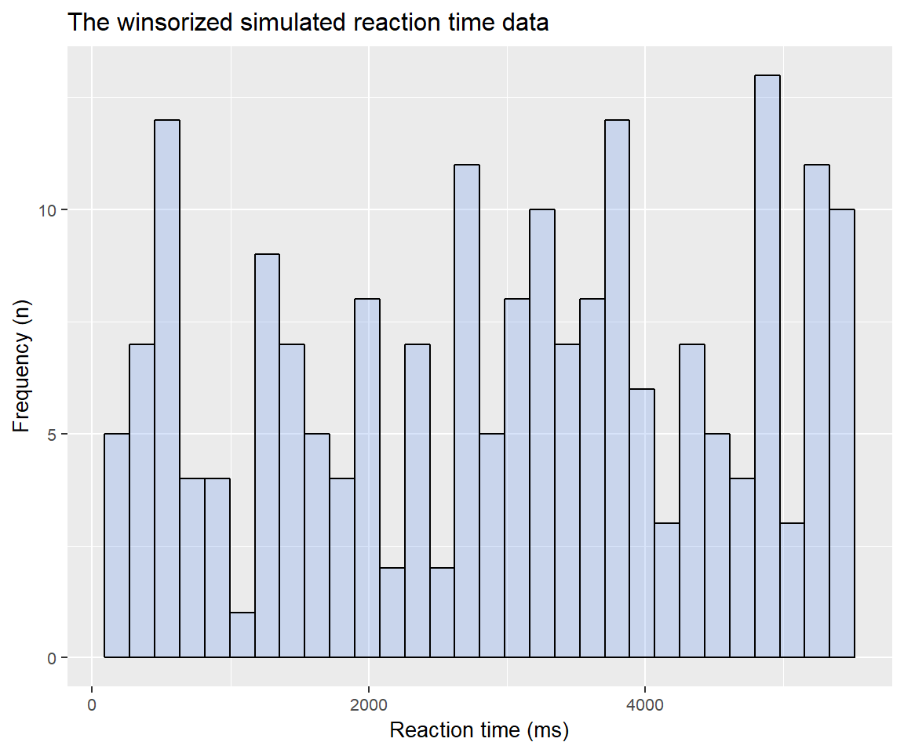

vignettes/REAC.Rmd
REAC.Rmd
The REAC package provides tools for
preparing your data for additional calculations related to ABV-index (Attention Bias Variability) and
data cleaning techniques such as winsorizing your data.
shaker(example, grouping = c("year", "subject"), gather = "trial", value = "RT")
ABV(example2, grouping = c("year", "subject"), trial = "trial", bin_width = 3, value = "RT", label = "label", type = c("Incongruent", "Congruent"), ID = "subject")
winzer(example, grouping = c("year", "subject"), x = 0.25, y = 0.75, z = 1.5, label = "trial", value = "RT")
For details about the demo dataset used for this example, please see “Example” data.
